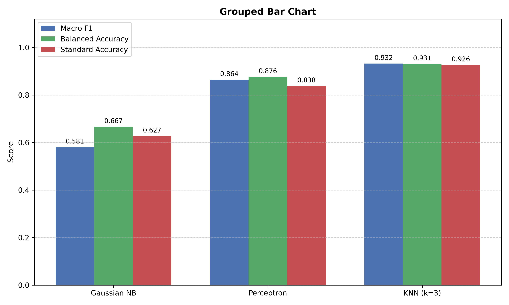
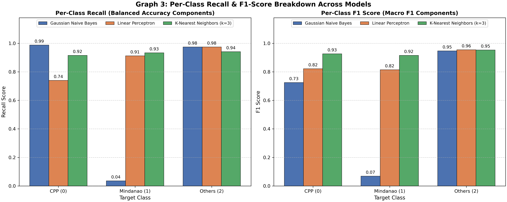

Group Name: Gem in AI
Course & Section: CMSC 170 ST-2L
The Philippines has experienced decades of internal armed conflict involving distinct insurgent movements,
secessionist fronts, and localized extremist groups. In historical conflict records compiled by the Uppsala
Conflict Data Program (UCDP), the column side_b identifies the specific non-state or insurgent
actor involved in an incident against the Government of the Philippines (side_a).
Problem Statement: Given quantitative attributes of a recorded armed conflict event—specifically its geographical coordinates, casualty breakdown, violence type, and engagement duration—this project aims to classify which category of group was responsible for the incident across three target classes:
Motivation: Different armed groups exhibit distinct geographical footprints and tactical behaviors. Some groups conduct small, brief hit-and-run ambushes across rural provinces, whereas others engage in prolonged, multi-day sieges or attacks with high civilian casualties within specific regional territories. By comparing three foundational machine learning paradigms—Gaussian Naive Bayes (probabilistic), Linear Perceptron (linear decision boundary), and K-Nearest Neighbors (distance-based neighborhood voting)—we evaluate how well classical algorithms can distinguish insurgent operational signatures from real-world spatio-temporal conflict data.
| Processed Index | Feature / Variable Name | Raw CSV Column Index | Data Type | Description |
|---|---|---|---|---|
| 0 | longitude |
30 | float |
Geographical longitude coordinate where the conflict event occurred. |
| 1 | latitude |
29 | float |
Geographical latitude coordinate where the conflict event occurred. |
| 2 | deaths_a |
41 | int |
Fatalities sustained by Side A (Philippine government forces). |
| 3 | deaths_b |
42 | int |
Fatalities sustained by Side B (rebel/insurgent organization). |
| 4 | deaths_civilians |
43 | int |
Fatalities sustained by civilians during the incident. |
| 5 | best |
45 | int |
UCDP best estimate of total fatalities resulting from the event. |
| 6 | type_of_violence |
5 | int |
UCDP violence category code (1 = state-based, 2 = non-state, 3 = one-sided violence). |
| 7 | duration_days |
39 & 40 (derived) | int |
Engineered duration of the clash in days, computed from date_end - date_start. |
| 8 (Target) | side_b |
17 | int (0, 1, 2) |
Target classification label: 0 = CPP, 1 = Mindanao groups, 2
= Others. |
preprocess.py)conflict_data_phl.csv using Python's
built-in csv module, skipping the header row.date_start (index 39) and
date_end (index 40) are parsed via datetime.fromisoformat(). The conflict duration
in days is computed as (date_end - date_start).days; if either date field is missing,
duration_days defaults to 0.
[longitude, latitude, deaths_a, deaths_b, deaths_civilians, best, type_of_violence, duration_days, side_b],
casting coordinates to float and casualty/violence/duration values to int.
classify_groups): After stratified splitting by
original side_b name, the target strings are mapped into three integer classes:
"CPP" → 0"Civilians", "Government of Kuwait", or
"Military faction (forces of Honasan, Abenina & Zumel)" → 2
1All three machine learning algorithms were implemented from scratch in pure Python without external machine learning libraries.
gaussian_nb.py)fit(train_data), training records are partitioned by class label c ∈
{0, 1, 2}. For each class, the model computes the prior probability P(c) = Nc /
Ntotal, the sample mean μc,j for each feature j, and
the sample variance σ2c,j for each feature j.smoothing = 1e-9) is added to every calculated variance
to prevent division-by-zero or logarithm domain errors when a feature has near-zero variance.predict(test_data), to avoid floating-point underflow, the classifier computes
the log-posterior score for each class by summing the log-prior and the Gaussian log-likelihoods
across all 8 features:
log_prob = log(P(c)) + sum( -0.5 * log(2 * pi * var) - ((x - mean)^2) / (2 * var) )
perceptron.py)0, 1, 2), the model
implements a One-vs-Rest (OvR) strategy in Perceptron. Three
independent binary perceptrons are trained—one per class.0.0.max_epochs = 100), each sample's linear score zc =
bc + ∑ wc,j xj is passed through a step sign activation
function (sgn(z) = +1 if z > 0, else -1).w[c][j] += learning_rate * (target - predicted) * x[j]
b[c] += learning_rate * (target - predicted)
predict_one), the raw linear combination score zc
is computed across all three class weight vectors, and the class producing the highest linear score
is selected.knn.py)fit(training_data) stores the preprocessed training records in memory.predict(testing_data), for every test instance, the model calculates the
Minkowski distance to every training instance across all 8 numerical features:
d = ( sum( |test[j] - train[j]|^p for j in 0..7 ) )^(1/p)
p = 2, this computes the standard Euclidean distance.
(distance, label) pairs are sorted in ascending order of distance, and the top
k = 3 nearest neighbors are retained.
counter() helper counts votes across the 3 classes. If a tie occurs among the
maximum vote counts, the farthest neighbor in the current k-subset is iteratively removed
(distances.pop()) and votes are recounted until a single unambiguous winner emerges.
split.py)side_b into numeric
classes, split_dataset() groups all 4,368 records into a dictionary keyed by the original
side_b armed-group name. Within each group, records are shuffled and the first
int(len(group) * 0.8) instances are assigned to the training set, while the remaining 20% are
assigned to the testing set. This guarantees that both large insurgent movements and smaller factions are
proportionally represented.
SEED = 67) is used both when shuffling
individual armed-group lists and when shuffling the combined training and testing sets.All evaluation metrics were implemented from scratch across recall_precision.py,
balanced_accuracy.py, macrof1.py, and confusion_matrix.py:
get_scores): Tallies True Positives
(TPc), False Positives (FPc), and False Negatives
(FNc) for each class c ∈ {0, 1, 2} in a single pass.count_correct): Proportion of total test instances
classified correctly: Accuracy = Correct Predictions / Total Samples.class_recall_precision,
precision, recall):
Precision_c = TP_c / (TP_c + FP_c) and Recall_c = TP_c / (TP_c + FN_c)
(returning 0 if the denominator is 0).balanced_accuracy.py): Computed as the unweighted average
of recall scores across all three classes ((Recall_0 + Recall_1 + Recall_2) / 3), which is
mathematically equivalent to Macro Recall and prevents majority-class dominance from inflating the score.
macrof1.py): Unweighted average of the per-class F1-scores
across all three classes:
Macro F1 = (1 / 3) * sum( (2 * Precision_c * Recall_c) / (Precision_c + Recall_c) ).
confusion_matrix.py): Cross-tabulates actual
classes (rows) against predicted classes (columns), reporting both raw sample counts and row-normalized
percentages (per-class recall).1e-9.0.01, maximum epochs =
100, initial bias = 0.0. Multiple learning rates were tested during sensitivity
analysis; because varying the step size yielded identical converged evaluation metrics on the dataset, η
= 0.01 was maintained.
bestk.py): Distance power
p = 2 (Euclidean distance) and k = 3 neighbors. To determine the
optimal k, the classifier was evaluated across k ∈ {1, 2, …, 20} using Macro
F1-Score as the primary selection criterion:

| Model | Correct / Total | Standard Accuracy (%) | Balanced Accuracy (%) | Macro Precision (%) | Macro Recall (%) | Macro F1 (%) |
|---|---|---|---|---|---|---|
| Gaussian Naive Bayes | 553 / 882 | 62.70% | 66.65% | 74.83% | 66.65% | 58.07% |
| Linear Perceptron | 739 / 882 | 83.79% | 87.63% | 86.56% | 87.63% | 86.43% |
| K-Nearest Neighbors (k=3) | 817 / 882 | 92.63% | 93.07% | 93.42% | 93.07% | 93.22% |

| Model | Class Label | Support | Precision (%) | Recall / Class Acc (%) | Class F1 (%) |
|---|---|---|---|---|---|
| Gaussian Naive Bayes | 0 (CPP) | 428 | 57.32% | 98.83% | 72.56% |
| Gaussian Naive Bayes | 1 (Mindanao) | 333 | 75.00% | 3.60% | 6.88% |
| Gaussian Naive Bayes | 2 (Others) | 121 | 92.19% | 97.52% | 94.78% |
| Linear Perceptron | 0 (CPP) | 428 | 92.42% | 74.07% | 82.23% |
| Linear Perceptron | 1 (Mindanao) | 333 | 73.61% | 91.29% | 81.50% |
| Linear Perceptron | 2 (Others) | 121 | 93.65% | 97.52% | 95.55% |
| K-Nearest Neighbors (k=3) | 0 (CPP) | 428 | 93.78% | 91.59% | 92.67% |
| K-Nearest Neighbors (k=3) | 1 (Mindanao) | 333 | 89.88% | 93.39% | 91.61% |
| K-Nearest Neighbors (k=3) | 2 (Others) | 121 | 96.61% | 94.21% | 95.40% |

| Actual \ Predicted | 0 (CPP) | 1 (Mindanao) | 2 (Others) | Support |
|---|---|---|---|---|
| 0 (CPP) | 423 (98.8%) | 4 (0.9%) | 1 (0.2%) | 428 |
| 1 (Mindanao) | 312 (93.7%) | 12 (3.6%) | 9 (2.7%) | 333 |
| 2 (Others) | 3 (2.5%) | 0 (0.0%) | 118 (97.5%) | 121 |
| Actual \ Predicted | 0 (CPP) | 1 (Mindanao) | 2 (Others) | Support |
|---|---|---|---|---|
| 0 (CPP) | 317 (74.1%) | 109 (25.5%) | 2 (0.5%) | 428 |
| 1 (Mindanao) | 23 (6.9%) | 304 (91.3%) | 6 (1.8%) | 333 |
| 2 (Others) | 3 (2.5%) | 0 (0.0%) | 118 (97.5%) | 121 |
| Actual \ Predicted | 0 (CPP) | 1 (Mindanao) | 2 (Others) | Support |
|---|---|---|---|---|
| 0 (CPP) | 392 (91.6%) | 33 (7.7%) | 3 (0.7%) | 428 |
| 1 (Mindanao) | 21 (6.3%) | 311 (93.4%) | 1 (0.3%) | 333 |
| 2 (Others) | 5 (4.1%) | 2 (1.7%) | 114 (94.2%) | 121 |

deaths_a,
deaths_b, deaths_civilians, and total fatalities best) are
directly correlated (best ≈ deaths_a + deaths_b + deaths_civilians). Naive Bayes
multiplies their individual likelihoods together, effectively over-weighting casualty counts
relative to geographical coordinates.
Civilians (captured directly by type_of_violence = 3 and
deaths_civilians), even a simple probabilistic or linear boundary easily isolates these records
from state-vs-insurgent battles.
duration_days can span tens or hundreds). In Euclidean distance (KNN) and linear weight updates
(Perceptron), extreme casualty or duration values can dominate spatial coordinate differences.
deaths_a, deaths_b, deaths_civilians) and their aggregate
(best) introduces redundant information that biases Naive Bayes log-likelihoods.max_epochs = 100, making its final hyperplane sensitive to the order of training samples.
log(1 + x) transformation to skewed casualty and duration
features would also make them better approximate a Gaussian distribution for Naive Bayes.best (or
replace raw death counts with casualty ratios, such as civilian-to-combatant death share) to reduce feature
correlation.1 / d) in KNN, or explore tree-based and kernel-based classifiers (such as Decision Trees,
Random Forests, or RBF-kernel SVMs) that handle multi-scale tabular features and regional boundaries
effectively.In this study, we evaluated three classical machine learning algorithms implemented from scratch—Gaussian Naive Bayes, One-vs-Rest Linear Perceptron, and K-Nearest Neighbors (k = 3)—on 4,368 historical Philippine conflict incidents from the UCDP dataset. Our experimental results demonstrate that K-Nearest Neighbors (k = 3) is by far the most effective approach, achieving a 92.63% Standard Accuracy, 93.07% Balanced Accuracy, and 93.22% Macro F1-Score. By leveraging local spatial and tactical similarity, KNN accurately separates nationwide CPP/NPA guerrilla clashes from localized Mindanao insurgent conflicts. In contrast, the Linear Perceptron achieved moderate success (86.43% Macro F1) due to north-south geographical trends but struggled where CPP and Mindanao territories overlapped, while Gaussian Naive Bayes (58.07% Macro F1) failed on Class 1 due to correlated casualty features and non-Gaussian distributions. Overall, non-parametric neighborhood learning proves highly effective for modeling the territorial nature of insurgent conflicts in the Philippines.
csv,
math, random, datetime, os). https://docs.python.org/3/